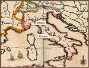
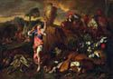

Castiglione
in Genoa and Rome (1640s)

The time
Castiglione spent in Genoa between 1639 and 1646 is considered his
principal mature period. It is around this time that he paints An
Allegory of Vanity, which now hangs in the Nelson-Atkins Museum
of Fine Art in Kansas City. Although a non-religious scene, this early
work already displays the sense of drama and color exhibited in
The Immaculate Conception.


Giovanni
Benedetto Castiglione
Allegory of Vanity
1647-1649
Oil on Canvas
39 x 56-11/16 in.
The Nelson-Atkins Museum of Art, Kansas City, Missouri
(Gift of the Samuel H. Kress Foundation)